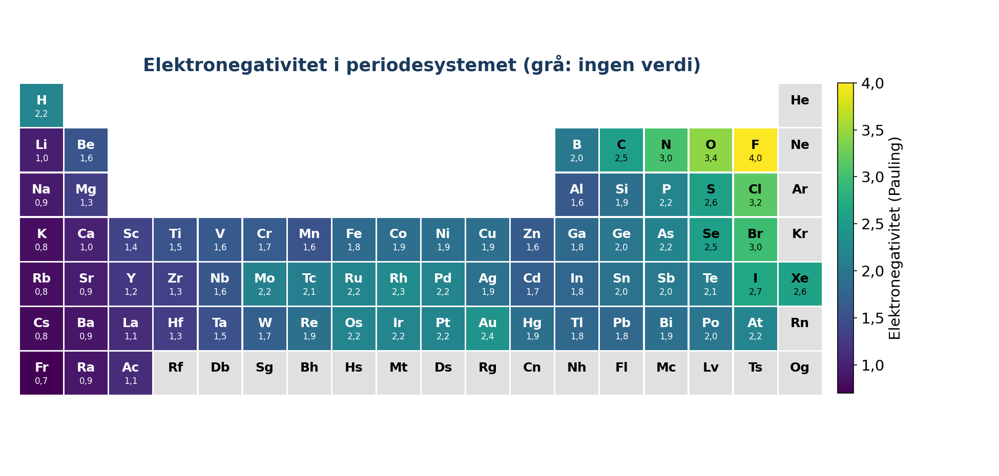
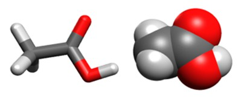

Forelesning 1: Kjemiske biblioteker og molekylvisualisering#
I denne forelesningen skal vi bruke Python-biblioteker som er laget for kjemi. Vi skal:
hente grunnstoffdata med
mendeleevog undersøke trender i periodesystemethente data om forbindelser fra PubChem med
pubchempylese inn molekyler fra SMILES og beregne egenskaper med
RDKitlage 3D-strukturer og visualisere molekyler og proteiner med
py3Dmolvurdere når vi bør bruke et bibliotek, og når vi heller bør skrive koden selv
Målet er ikke å huske syntaksen til hvert bibliotek. Målet er å kunne bruke dokumentasjonen, løse kjemiske problemer med bibliotekene og kontrollere om resultatene gir mening. Underveis øver vi på lister, løkker, if-tester, funksjoner og dictionarier.
Menti: [lenke]
Hvorfor bruke biblioteker?#
Et bibliotek er kode som andre har skrevet, testet og gjort tilgjengelig. Biblioteker er særlig nyttige når de gir oss
data: kvalitetssikrede verdier, for eksempel ioniseringsenergier og atomradier
algoritmer og visualisering: funksjonalitet som er krevende å programmere selv, for eksempel å tegne strukturformler eller lage 3D-strukturer
standardisering: filformater og konvensjoner som gjør at ulike programmer kan utveksle data
Del |
Bruksområde |
Bibliotek |
|---|---|---|
1 |
Grunnstoffdata |
|
2 |
Data om forbindelser |
|
3 |
Struktur og egenskaper |
|
4 |
3D-visualisering |
|
5 |
Beregninger vi skriver selv |
egne funksjoner |
Installasjon#
Kjør cellen nedenfor én gang. Utropstegnet gjør at kommandoen sendes til pakkebehandleren pip i stedet for å tolkes som Python-kode.
!pip install mendeleev pubchempy rdkit py3Dmol
Del 1: Grunnstoffdata med mendeleev#

Periodesystemet kan betraktes som et stort datasett. Egenskaper som elektronegativitet, ioniseringsenergi og atomradius er samlet fra målinger og modeller. De kan ikke beregnes med noen få linjer kode, så her er et bibliotek til stor hjelp.
Grunnenheten i mendeleev er element. Vi kan hente et grunnstoff med symbol eller atomnummer, og deretter lese av egenskapene som attributter: grunnstoff.egenskap.
Elektronegativitet hentes med et metodekall, altså med parentes. Grunnen er at elektronegativitet kan defineres på flere måter, så vi må angi hvilken skala vi vil bruke.
Diskuter: De tre skalaene gir svært ulike tall for svovel. Hvorfor? Kan vi sammenlikne tallene direkte?
Trender i en periode#
Vi trenger ikke hente hele periodesystemet for å undersøke en trend. Vi kan lage ei liste med grunnstoffsymboler og hente ett grunnstoff om gangen i ei løkke. Symbolene kan vi bruke direkte på x-aksen.
Prøv selv: Fyll inn programmet nedenfor slik at det plotter elektronegativiteten til halogenene. Går trenden samme vei nedover i ei gruppe som bortover i en periode? Forklar ut fra kjerneladning og skjerming.
halogener = ["F", "Cl", "Br", "I"]
verdier = []
for ?? in ??:
??
plt.plot(halogener, verdier, marker="o")
plt.xlabel("Grunnstoff")
plt.ylabel("Elektronegativitet (Pauling)")
plt.show()
Manglende verdier#
Et bibliotek har ikke nødvendigvis verdier for alle egenskaper til alle grunnstoffer. Se på programmet nedenfor.
Hva gjør programmet?
Noen grunnstoffer får verdien
None. Hvilke grunnstoffer er det, og hva kan være den kjemiske forklaringen?
for atomnummer in range(1, 119):
grunnstoff = element(atomnummer)
print(grunnstoff.symbol, grunnstoff.electronegativity("pauling"))
Programmet nedenfor skal plotte elektronegativitet som funksjon av atomnummer, men bare for grunnstoffer som faktisk har en verdi. Fyll inn det som mangler.
atomnumre = []
elektronegativiteter = []
for atomnummer in range(1, 119):
grunnstoff = element(atomnummer)
verdi = grunnstoff.electronegativity("pauling")
if ??:
??
??
plt.scatter(atomnumre, elektronegativiteter)
plt.xlabel("Atomnummer")
plt.ylabel("Elektronegativitet (Pauling)")
plt.show()
Ioniseringsenergier#
Ioniseringsenergiene ligger i en dictionary der nøkkelen er ioniseringsgraden. natrium.ionenergies[1] gir altså første ioniseringsenergi i eV.
Prøv selv: Plott de fem første ioniseringsenergiene til magnesium mot ioniseringsgrad. Hvor kommer det store spranget, og hvorfor akkurat der?
magnesium = element("Mg")
grader = [1, 2, 3, 4, 5]
energier = []
??
plt.plot(grader, energier, marker="o")
plt.xlabel("Ioniseringsgrad")
plt.ylabel("Ioniseringsenergi (eV)")
plt.show()
Del 2: Data om forbindelser med PubChemPy#
PubChem er en åpen database med informasjon om millioner av kjemiske forbindelser. Biblioteket pubchempy henter data fra PubChem over internett mens koden kjører. Det betyr at vi trenger nettilgang, og at mange oppslag kan ta tid.
Vi søker på et navn og får tilbake ei liste med treff. Det første treffet er som regel det vi er ute etter.
Prøv selv: Fyll inn programmet nedenfor slik at det henter SMILES-koden for hvert stoff i lista og lagrer den i en dictionary der navnet er nøkkelen.
navneliste = ["caffeine", "paracetamol", "aspirin", "ibuprofen"]
smiles_pubchem = {}
for navn in navneliste:
forbindelse = ??
smiles_pubchem[??] = ??
print(smiles_pubchem)
Nettbaserte tjenester kan være trege eller endre seg. I resten av forelesningen bruker vi derfor dictionariet nedenfor, slik at vi ikke er avhengige av nettet.
smiles = {
"koffein": "CN1C=NC2=C1C(=O)N(C)C(=O)N2C",
"paracetamol": "CC(=O)Nc1ccc(O)cc1",
"acetylsalisylsyre": "CC(=O)Oc1ccccc1C(=O)O",
"ibuprofen": "CC(C)Cc1ccc(cc1)C(C)C(=O)O",
}
Del 3: Molekyler som struktur med RDKit#
RDKit arbeider med selve molekylstrukturen, ikke bare molekylformelen. Det gjør at vi kan bevege oss mellom ulike representasjoner av den samme forbindelsen:
symbolsk: SMILES-koden
CCOrepresenterer etanoltodimensjonal: en strukturformel
tredimensjonal: en konformasjon med bindingslengder og vinkler
beregnede egenskaper: molar masse, polaritet, antall H-bindingsdonorer og så videre
SMILES#
SMILES er en måte å skrive en molekylstruktur som tekst.
Regel |
Eksempel |
|---|---|
Atomer skrives med symbol. H-atomer utelates og legges til automatisk. |
|
|
|
Parenteser angir sidegrener |
|
Tall åpner og lukker ringer |
|
Små bokstaver angir aromatiske atomer |
|
Chem.MolFromSmiles returnerer None hvis SMILES-koden er ugyldig. Hva skjer hvis vi prøver Chem.MolFromSmiles("C1CC")? Hvorfor er den ugyldig?
Flere molekyler samtidig#
Draw.MolsToGridImage tegner flere molekyler i et rutenett. Funksjonen krever to lister: ei liste med molekylobjekter og ei liste med navn. Vi må altså gjøre dictionariet om til to lister.
Prøv selv (Menti): Skriv SMILES-koder for propan-2-ol, eddiksyre og toluen. Fyll dem inn nedenfor og tegn strukturene for å sjekke at du har rett.
mine_smiles = {
"propan-2-ol": "??",
"eddiksyre": "??",
"toluen": "??",
}
??
Fra struktur til egenskap#
Når RDKit har lest inn en struktur, kan biblioteket beregne molekyldeskriptorer. En deskriptor er et tall som beskriver en egenskap ved molekylet.
Funksjon |
Hva den gir |
|---|---|
|
molar masse |
|
estimert logP, et mål på hvor lipofilt stoffet er |
|
topologisk polart overflateareal |
|
antall H-bindingsdonorer |
|
antall H-bindingsakseptorer |
Legg merke til at noen av disse er direkte opptellinger fra strukturen, mens logP er et modellestimat.
Prøv selv: Lipinskis rule of five er en tommelfingerregel for om et stoff kan fungere som et legemiddel i tablettform. Regelen brytes hvis mer enn ett av disse kriteriene er oppfylt:
molar masse over 500 g/mol
logP over 5
flere enn 5 H-bindingsdonorer
flere enn 10 H-bindingsakseptorer
Fullfør funksjonen nedenfor slik at den returnerer antall brudd. Test den på stoffene i smiles og på kolesterol. Finnes det kjente legemidler som bryter regelen?
def antall_lipinski_brudd(smiles_kode):
molekyl = Chem.MolFromSmiles(smiles_kode)
brudd = 0
if Descriptors.MolWt(molekyl) > 500:
brudd += 1
??
return brudd
for stoffnavn in smiles:
print(stoffnavn, antall_lipinski_brudd(smiles[stoffnavn]))
kolesterol = "CC(C)CCCC(C)C1CCC2C1(CCC3C2CC=C4C3(CCC(C4)O)C)C"
print("kolesterol", antall_lipinski_brudd(kolesterol))
Finne funksjonelle grupper med SMARTS (hvis tid)#
SMILES beskriver ett bestemt molekyl. SMARTS beskriver et mønster vi kan lete etter i mange molekyler. Mønsteret for en karboksylsyre er [CX3](=O)[OX2H1]:
[CX3]: et karbonatom med tre naboatomer(=O): karbonet er dobbeltbundet til et oksygen[OX2H1]: karbonet er også bundet til et oksygen med to naboer og ett hydrogen
X står altså for antall naboatomer, og H for antall hydrogenatomer.
monstre = {
"karboksylsyre": "[CX3](=O)[OX2H1]",
"ester": "[CX3](=O)[OX2][CX4]",
"amid": "[CX3](=O)[NX3]",
"alkohol/fenol": "[OX2H]",
"aromatisk ring": "c1ccccc1",
}
Diskuter:
Programmet finner ingen ester i acetylsalisylsyre. Se på strukturformelen. Har acetylsalisylsyre en estergruppe? Hvilken del av mønsteret
[CX3](=O)[OX2][CX4]er det som gjør at den ikke blir funnet?[OX2H]gir treff på OH-gruppa i karboksylsyrer. Er det riktig eller feil? Hvem avgjør det, programmet eller du?
Prøv selv: Endre estermønsteret slik at det også finner estere der oksygenet er bundet til en aromatisk ring. Tips: [#6] betyr et hvilket som helst karbonatom, både alifatisk og aromatisk. Sjekk at mønsteret ikke gir treff på karboksylsyrer.
monstre["ester"] = "??"
for stoffnavn in smiles:
molekyl = Chem.MolFromSmiles(smiles[stoffnavn])
mal = Chem.MolFromSmarts(monstre["ester"])
print(stoffnavn, len(molekyl.GetSubstructMatches(mal)))
Del 4: Fra 2D til 3D#
En SMILES-kode sier hvilke atomer som er bundet sammen, men ingenting om geometrien. RDKit kan lage et forslag til en 3D-struktur i flere trinn:
Kode |
Hva som skjer |
|---|---|
|
legger til H-atomene som er utelatt i SMILES |
|
lager startkoordinater i 3D |
|
justerer geometrien med et klassisk kraftfelt |
|
gjør strukturen om til tekst i et standardisert filformat |
Resultatet er én konformasjon: en rimelig geometri, men ikke nødvendigvis den eneste eller den mest stabile.
Diskuter: Hva tror du tallene i molblokken betyr? Hvor mange atomer og bindinger har etanol?
Visualisering med py3Dmol#
py3Dmol tegner interaktive 3D-modeller i notebooken. Den kan lese molblokken fra RDKit direkte. Her ser vi poenget med standardiserte filformater: to biblioteker som ikke er laget sammen, kan likevel utveksle strukturer.

Vi kan velge mellom ulike representasjoner, og de tilsvarer modellene vi kjenner fra kjemiundervisningen:
Stil i py3Dmol |
Modell |
|---|---|
|
pinnemodell |
|
kalottmodell (atomene med van der Waals-radius) |
|
kule-pinne-modell |
Diskuter: Hvilken modell gir best inntrykk av størrelsen og formen til molekylet? Hvilken viser bindingene best?
Prøv selv: Fullfør funksjonen vis_3d slik at den tar inn en SMILES-kode og viser en 3D-modell. Bruk den på ibuprofen med ulike stiler.
def vis_3d(smiles_kode, stil={"stick": {}}):
"""Viser en 3D-modell av molekylet gitt ved SMILES-koden."""
# 1. Les inn SMILES og legg til hydrogenatomer
molekyl = ??
# 2. Lag 3D-koordinater og optimer geometrien
??
??
# 3. Tegn molekylet
visning = py3Dmol.view(width=400, height=300)
visning.addModel(Chem.MolToMolBlock(molekyl), "mol")
visning.setStyle(stil)
visning.zoomTo()
visning.show()
vis_3d(smiles["ibuprofen"])
vis_3d(smiles["ibuprofen"], stil={"sphere": {}})
Proteiner fra Protein Data Bank#
Store biomolekyler lager vi ikke fra SMILES. Eksperimentelt bestemte strukturer ligger i Protein Data Bank (PDB), der hver struktur har en ID på fire tegn. py3Dmol kan hente strukturen direkte.
Vi ser på hemoglobin (PDB-ID 4HHB). Proteinet består av fire kjeder, og hver kjede har en hemgruppe der O2 bindes til et jernatom. Vi viser proteinet som cartoon, som viser sekundærstrukturen (α-helikser), og hemgruppene som pinnemodell.
Prøv selv: Vis keratin (PDB-ID 6EC0) eller et enzym du selv velger. Prøv å fargelegge kjedene ulikt med {"cartoon": {"colorscheme": "chain"}}. Hvilken sekundærstruktur dominerer i keratin, og hvordan passer det med at keratin finnes i hår og negler?
Alternativ: Biblioteket nglview er laget spesielt for store biomolekyler og simuleringsdata, og kan være nyttig når vi skal se på trajektorier senere.
Del 5: Når bør vi skrive koden selv?#
Noen biblioteker har ferdige funksjoner for stoffmengde, fortynning og liknende. For så enkle beregninger er det ofte bedre å skrive funksjonene selv. Da blir sammenhengen mellom kjemien og koden synlig, og koden er lett å tilpasse.
Funksjonen nedenfor bruker RDKit til det som er vanskelig (å tolke strukturen), og så kan vi bygge egne funksjoner oppå den.
def molar_masse(smiles_kode):
"""Molar masse i g/mol for et molekyl gitt ved SMILES."""
molekyl = Chem.MolFromSmiles(smiles_kode)
if molekyl is None:
raise ValueError("Ugyldig SMILES: " + smiles_kode)
return Descriptors.MolWt(molekyl)
Prøv selv: Skriv funksjonene stoffmengde(masse, smiles_kode) og konsentrasjon(masse, smiles_kode, volum_liter). Begge skal bruke molar_masse. En tablett inneholder 500 mg paracetamol. Hvor mange mol er det, og hva blir konsentrasjonen hvis tabletten løses i 0,250 L vann? Kontroller svaret for hånd.
def stoffmengde(masse, smiles_kode):
??
def konsentrasjon(masse, smiles_kode, volum_liter):
??
print(stoffmengde(0.500, smiles["paracetamol"]), "mol")
print(konsentrasjon(0.500, smiles["paracetamol"], 0.250), "mol/L")
Vurdere et bibliotek#
Det viktigste er ikke å huske syntaksen, men å kunne vurdere om et bibliotek passer til oppgaven:
Er biblioteket vedlikeholdt og dokumentert?
Hva tilfører det? Data, algoritmer eller standardisering?
Hvilke avhengigheter og begrensninger har det?
Kan vi kontrollere resultatet mot en håndberegning, en tabellverdi eller en annen kilde?
Dette gjelder også kode fra KI-verktøy. De kan foreslå funksjoner og biblioteker som ser riktige ut, men som ikke finnes eller brukes på en annen måte.
Menti: Du ber en KI-chatbot om kode, og den bruker et kjemibibliotek du aldri har hørt om. Hva sjekker du før du stoler på resultatet?
Oppgaver:
Plott første ioniseringsenergi for grunnstoffene i tredje periode (Na til Ar). Beskriv trenden og forklar spesielt hvorfor den brytes ved Al og S.
Plott atomradius (
atomic_radius) som funksjon av atomnummer for grunnstoff 19 til 36. Forklar hva du ser, og hvorfor overgangsmetallene skiller seg ut.Velg fem legemidler eller naturstoffer. Hent SMILES fra PubChem, tegn strukturene i et rutenett og beregn logP og TPSA for hvert stoff. Lag et spredningsplott av logP mot TPSA og beskriv sammenhengen du ser.
Lag en 3D-modell av benzosyre som kule-pinne-modell og som kalottmodell. Vis deretter keratin (PDB-ID
6EC0) eller et annet protein du velger.(Hvis vi har gått gjennom SMARTS) Lag SMARTS-mønstre for keton og eter, og test dem på minst fem molekyler der du kjenner strukturen. Fant du treff du ikke ventet?